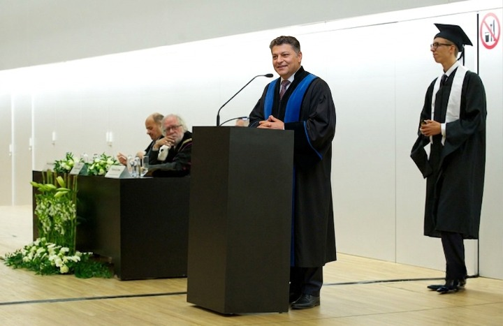

Dr Mesut İnan, PhD, SFHEA | Academic & Professional Photos
Official photo collection associated with the academic and professional profile of Dr Mesut İnan, also indexed as Dr Mesut Inan, covering Cyber Security, Artificial Intelligence, research, education and professional activities.
Official Academic Profile Photo
Primary professional profile image for Dr Mesut İnan, PhD, SFHEA, associated with academic work in Cyber Security, Artificial Intelligence, Information Security and Computer Science.


